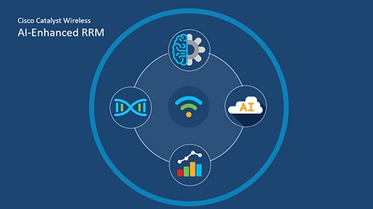

Research Interests
Artificial Intelligence in Communication Resource Management
My research explores the use of artificial intelligence and reinforcement learning for resource management in wireless communication systems. In particular, I have developed reinforcement learning–based frameworks, including Soft Actor-Critic (SAC), for joint user scheduling and power allocation in multi-user MIMO and ultra-dense wireless networks. These approaches enable adaptive interference management while optimizing spectral efficiency and fairness under dynamic channel conditions. I have also investigated deep transformer–based models for MIMO detection, leveraging attention mechanisms to capture spatial interference and channel dependencies, resulting in robust detection performance under correlated channels and imperfect channel state information.
Machine Learning–Based Semantic/Source and Channel Encoding
A major component of my work focuses on machine learning–driven semantic communication, where communication systems are optimized for downstream inference tasks rather than bit-level accuracy. I employ the Information Bottleneck principle together with Variational Autoencoders (VAEs) and self-supervised learning to design joint semantic/source and channel encoding and decoding frameworks. My research includes multi-task and multi-user semantic communication, fully end-to-end learned wireless systems, and modular, energy-efficient semantic encoders for edge inference networks, aiming to enable scalable, task-aware, and resource-efficient communication in distributed and edge-intelligent environments.

Machine Learning for Smart Grids
Modern smart grids increasingly rely on data-driven sensing, communication, and decision-making to ensure reliable, efficient, and resilient operation. Machine learning–based methods enable distributed state estimation, anomaly detection, and predictive control over communication-constrained power networks. As grid infrastructures become more decentralized and IoT-enabled, efficient information exchange between edge devices and control centers becomes critical, particularly under stringent latency, bandwidth, and reliability constraints. Learning-aware communication and semantic information extraction allow power system measurements to be transmitted in a task-oriented manner, reducing communication overhead while preserving decision-relevant information. This integration of wireless communications, edge intelligence, and machine learning supports scalable monitoring, adaptive control, and enhanced situational awareness in next-generation cyber-physical energy systems.